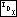
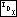
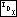

![[ToC]](toc.png) 

![[Skip Back]](skipback.png)
![[Skip Fwd]](skipfwd.png)
![[Prev]](prev.png)
![[Up]](up.png)
![[Next]](next.png)
| Chapter 8 |

|
1. No: the compiler may insert padding between or after structure members. For example, today (2002) the most common desktop computers have 32-bit pointers and and 8-bit chars. On these systems, most compilers will pad out structures to a multiple of 32 bits. Under these circumstances, struct tavl_node is no larger than struct avl_node, because (32 + 32 + 8) and (32 + 32 + 8 + 8 + 8) both round up to the same multiple of 32 bits, or 96 bits.
1. We just have to special-case the possibility that subtree b is a thread.
/* Rotates right at *yp. */ static void
rotate_right (struct tavl_node **yp)
{ struct tavl_node *y = *yp; struct tavl_node *x = y->tavl_link[0]; if (x->tavl_tag[1] == TAVL_THREAD)
{ x->tavl_tag[1] = TAVL_CHILD; y->tavl_tag[0] = TAVL_THREAD; y->tavl_link[0] = x; } else
y->tavl_link[0] = x->tavl_link[1]; x->tavl_link[1] = y; *yp = x; }
/* Rotates left at *xp. */ static void
rotate_left (struct tavl_node **xp)
{ struct tavl_node *x = *xp; struct tavl_node *y = x->tavl_link[1]; if (y->tavl_tag[0] == TAVL_THREAD)
{ y->tavl_tag[0] = TAVL_CHILD; x->tavl_tag[1] = TAVL_THREAD; x->tavl_link[1] = y; } else
x->tavl_link[1] = y->tavl_link[0]; y->tavl_link[0] = x; *xp = y; }
1. Besides this change, the statement
z->tavl_link[y != z->tavl_link[0]] = w;
must be removed from <Step 4: Rebalance after TAVL insertion 304>, and copies added to the end of <Rebalance TAVL tree after insertion in right subtree 308> and <Rebalance for - balance factor in TAVL insertion in left subtree 306>.
657. <Rebalance + balance in TAVL insertion in left subtree, alternate version 657> = w = x->tavl_link[1]; rotate_left (&y->tavl_link[0]); rotate_right (&z->tavl_link[y != z->tavl_link[0]]); if (w->tavl_balance == -1)
x->tavl_balance = 0, y->tavl_balance = +1; else if (w->tavl_balance == 0)
x->tavl_balance = y->tavl_balance = 0; else /* w->tavl_balance == +1 */
x->tavl_balance = -1, y->tavl_balance = 0; w->tavl_balance = 0;
1. We can just reuse the alternate implementation of case 4 for TBST deletion, following it by setting up q and dir as the rebalancing step expects them to be.
658. <Case 4 in TAVL deletion, alternate version 658> = <Case 4 in TBST deletion, alternate version; tbst => tavl 656> q = r; dir = 0;
1. Our argument here is similar to that in Exercise 7.7-4. Consider the links that are traversed to successfully find the parent of each node, besides the root, in the tree shown below. Do not include links followed on the side that does not lead to the node's parent. Because there are never more of these than on the successful side, they add only a constant time to the algorithm and can be ignored.
![[Click here for plain-text rendering]](tbstdel6.png)
The table below lists the links followed. The important point is that no link is listed twice.
| Node | Links Followed to Node's Parent
| |
| 0 | 0->2, 2->3
| |
| 1 | 1->2
| |
| 2 | 2->1, 1->0
| |
| 3 | 3->5, 5->6
| |
| 4 | 4->5
| |
| 5 | 5->4, 4->3
| |
| 6 | (root)
| |
| 7 | 7->6
|
This generalizes to all TBSTs. Because a TBST with n nodes contains only 2n links, this means we have an upper bound on finding the parent of every node in a TBST of at most 2n successful link traversals plus 2n unsuccessful link traversals. Averaging 4n over n nodes, we get an upper bound of 4n/n == 4 link traversals, on average, to find the parent of a given node.
This upper bound applies only to the average case, not to the case of any individual node. In particular, it does not say that the usage of the algorithm in tavl_delete() will exhibit average behavior. In practice, however, the performance of this algorithm in tavl_delete() seems quite acceptable. See Exercise 3 for an alternative with more certain behavior.
2. Instead of storing a null pointer in the left thread of the least node and the right thread of the greatest node, store a pointer to a node “above the root”. To make this work properly, tavl_root will have to become an actual node, not just a node pointer, because otherwise trying to find its right child would invoke undefined behavior. Also, both of tavl_root's children would have to be the root node.
This is probably not worth it. On the surface it seems like a good idea but ugliness lurks beneath.
3. The necessary changes are pervasive, so the complete code for the modified function is presented below. The search step is borrowed from TRB deletion, presented in the next chapter.
659. <TAVL item deletion function, with stack 659> = void *
tavl_delete (struct tavl_table *tree, const void *item)
{ /* Stack of nodes. */ struct tavl_node *pa[TAVL_MAX_HEIGHT]; /* Nodes. */ unsigned char da[TAVL_MAX_HEIGHT]; /* tavl_link[] indexes. */ int k = 0; /* Stack pointer. */ struct tavl_node *p; /* Traverses tree to find node to delete. */ int cmp; /* Result of comparison between item and p. */ int dir; /* Child of p to visit next. */ assert (tree != NULL && item != NULL); <Step 1: Search TRB tree for item to delete; trb => tavl 350> <Step 2: Delete item from TAVL tree, with stack 660> <Steps 3 and 4: Update balance factors and rebalance after TAVL deletion, with stack 665> return (void *) item; }
660. <Step 2: Delete item from TAVL tree, with stack 660> = if (p->tavl_tag[1] == TAVL_THREAD)
{ if (p->tavl_tag[0] == TAVL_CHILD) {
<Case 1 in TAVL deletion, with stack 661>
} else
{
<Case 2 in TAVL deletion, with stack 662>
} }
else
{ struct tavl_node *r = p->tavl_link[1]; if (r->tavl_tag[0] == TAVL_THREAD) {
<Case 3 in TAVL deletion, with stack 663>
} else
{
<Case 4 in TAVL deletion, with stack 664>
} } tree->tavl_count–; tree->tavl_alloc->libavl_free (tree->tavl_alloc, p);
This code is included in 659.
661. <Case 1 in TAVL deletion, with stack 661> = struct tavl_node *r = p->tavl_link[0]; while (r->tavl_tag[1] == TAVL_CHILD) r = r->tavl_link[1]; r->tavl_link[1] = p->tavl_link[1]; pa[k - 1]->tavl_link[da[k - 1]] = p->tavl_link[0];
This code is included in 660.
662. <Case 2 in TAVL deletion, with stack 662> = pa[k - 1]->tavl_link[da[k - 1]] = p->tavl_link[da[k - 1]]; if (pa[k - 1] != (struct tavl_node *) &tree->tavl_root) pa[k - 1]->tavl_tag[da[k - 1]] = TAVL_THREAD;
This code is included in 660.
663. <Case 3 in TAVL deletion, with stack 663> = r->tavl_link[0] = p->tavl_link[0]; r->tavl_tag[0] = p->tavl_tag[0]; r->tavl_balance = p->tavl_balance; if (r->tavl_tag[0] == TAVL_CHILD)
{ struct tavl_node *x = r->tavl_link[0]; while (x->tavl_tag[1] == TAVL_CHILD) x = x->tavl_link[1]; x->tavl_link[1] = r; } pa[k - 1]->tavl_link[da[k - 1]] = r; da[k] = 1; pa[k++] = r;
This code is included in 660.
664. <Case 4 in TAVL deletion, with stack 664> = struct tavl_node *s; int j = k++; for (;;)
{ da[k] = 0; pa[k++] = r; s = r->tavl_link[0]; if (s->tavl_tag[0] == TAVL_THREAD) break; r = s; } da[j] = 1; pa[j] = pa[j - 1]->tavl_link[da[j - 1]] = s; if (s->tavl_tag[1] == TAVL_CHILD) r->tavl_link[0] = s->tavl_link[1]; else
{ r->tavl_link[0] = s; r->tavl_tag[0] = TAVL_THREAD; } s->tavl_balance = p->tavl_balance; s->tavl_link[0] = p->tavl_link[0]; if (p->tavl_tag[0] == TAVL_CHILD)
{ struct tavl_node *x = p->tavl_link[0]; while (x->tavl_tag[1] == TAVL_CHILD) x = x->tavl_link[1]; x->tavl_link[1] = s; s->tavl_tag[0] = TAVL_CHILD; } s->tavl_link[1] = p->tavl_link[1]; s->tavl_tag[1] = TAVL_CHILD;
This code is included in 660.
665. <Steps 3 and 4: Update balance factors and rebalance after TAVL deletion, with stack 665> = assert (k > 0); while (–k > 0)
{ struct tavl_node *y = pa[k]; if (da[k] == 0)
{ y->tavl_balance++; if (y->tavl_balance == +1)
break; else if (y->tavl_balance == +2)
{ <Step 4: Rebalance after TAVL deletion, with stack 666> } }
else
{ <Steps 3 and 4: Symmetric case in TAVL deletion, with stack 667> } }
This code is included in 659.
666. <Step 4: Rebalance after TAVL deletion, with stack 666> = struct tavl_node *x = y->tavl_link[1]; assert (x != NULL); if (x->tavl_balance == -1)
{ struct tavl_node *w; <Rebalance for - balance factor in TAVL insertion in right subtree 310> pa[k - 1]->tavl_link[da[k - 1]] = w; } else if (x->tavl_balance == 0)
{ y->tavl_link[1] = x->tavl_link[0]; x->tavl_link[0] = y; x->tavl_balance = -1; y->tavl_balance = +1; pa[k - 1]->tavl_link[da[k - 1]] = x; break; } else /* x->tavl_balance == +1 */
{ if (x->tavl_tag[0] == TAVL_CHILD) y->tavl_link[1] = x->tavl_link[0]; else
{ y->tavl_tag[1] = TAVL_THREAD; x->tavl_tag[0] = TAVL_CHILD; } x->tavl_link[0] = y; x->tavl_balance = y->tavl_balance = 0; pa[k - 1]->tavl_link[da[k - 1]] = x; }
This code is included in 665.
667. <Steps 3 and 4: Symmetric case in TAVL deletion, with stack 667> = y->tavl_balance–; if (y->tavl_balance == -1)
break; else if (y->tavl_balance == -2)
{ struct tavl_node *x = y->tavl_link[0]; assert (x != NULL); if (x->tavl_balance == +1)
{ struct tavl_node *w; <Rebalance for + balance factor in TAVL insertion in left subtree 307> pa[k - 1]->tavl_link[da[k - 1]] = w; } else if (x->tavl_balance == 0)
{ y->tavl_link[0] = x->tavl_link[1]; x->tavl_link[1] = y; x->tavl_balance = +1; y->tavl_balance = -1; pa[k - 1]->tavl_link[da[k - 1]] = x; break; } else /* x->tavl_balance == -1 */
{ if (x->tavl_tag[1] == TAVL_CHILD) y->tavl_link[0] = x->tavl_link[1]; else
{ y->tavl_tag[0] = TAVL_THREAD; x->tavl_tag[1] = TAVL_CHILD; } x->tavl_link[1] = y; x->tavl_balance = y->tavl_balance = 0; pa[k - 1]->tavl_link[da[k - 1]] = x; } }
This code is included in 665.